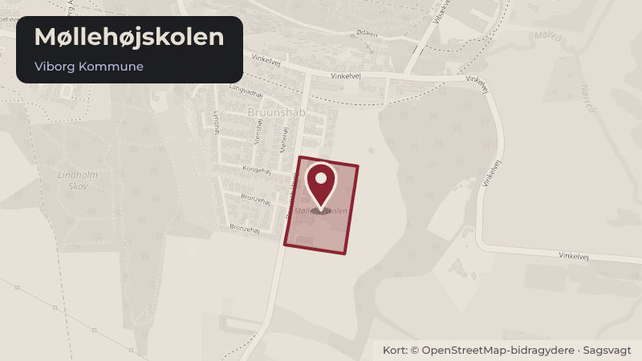

Besluttet 15. september, Børne- og Ungdomsudvalget, Viborg
Løsningsforslag til kapacitetsudfordringerne på Møllehøjskolen
Børne- og Ungdomsudvalget skal med denne sag beslutte håndteringen af kapacitetsudfordringerne på Møllehøjskolen.
Steder i sagen: Møllehøjskolen

Kort fortalt
- Forslaget
- Udvalget i tæt samarbejde med eleverne, medarbejderne, skolens ledelse og
- Lejen af pavillonen forlænges til og med skoleåret 2027/28 med mulighed for
- Hvem
- Børne- og Ungdomsudvalget, Viborg Kommune
- Hvornår
- Tirsdag 15. september 2026
- Status
- Besluttet. 1. Eleverne, medarbejderne, skolens ledelse og skolebestyrelsen skal afsøge alternative løsninger til kapacitetsudfordringerne forårsaget af, at Møllehøjskolen fortsætter med 0.6. klassetrin. Udvalget vil følge arbejdet tæt. 2. Lejen af pavillonen forlænges til og med skoleåret 2027/28 med mulighed for forlængelse til og med skoleåret 2028/29.
Læs hele sagen Kommunens egen tekst
Indstilling
Direktøren for Børn & Unge indstiller, at udvalget drøfter og beslutter:
1. at udvalget i tæt samarbejde med eleverne, medarbejderne, skolens ledelse og
skolebestyrelsen skal afsøge alternative løsninger til kapacitetsudfordringerne forårsaget
af, at Møllehøjskolen fortsætter med 0.-6. klassetrin.
2. at lejen af pavillonen forlænges til og med skoleåret 2027/28 med mulighed for
forlængelse til og med skoleåret 2028/29.
Sagsfremstilling
Historik
Kapacitetsudfordringerne på Møllehøjskolen har senest været behandlet på møde i Børne- og
Ungdomsudvalget den 16. juni 2026, sag nr. 2, hvor den videre proces blev besluttet.
Inddragelse og høring
Der har senest været afholdt borgermøde den 12. august 2026, hvor der var mulighed for at
komme med forslag til løsningsmuligheder. Materiale fra borgermødet kan tilgås her. På
baggrund af borgermødet blev der udarbejdet 3 scenarier, der har været til udtalelse ved LokalMED på både Møllehøjskolen og Overlund Skole. Udtalelserne er vedlagt som bilag 1.
Beskrivelse
Møllehøjskolen er bygget til at være en to-sporet skole med 14 klasseværelser. På grund af en
stigning i antallet af elever i skoledistriktet blev det i 2024 besluttet at opsætte en pavillon med
yderligere 3 klasseværelser i skoleårene 2024/25 til og med skoleåret 2026/27. Derudover blev
det med budgetforliget for 2025 tilkendegivet, at yderligere kapacitetsproblemer på
Møllehøjskolen skulle løses ved at flytte 6. klassetrin til Overlund Skole.
Den seneste elev- og klasseprognose viser, at der fortsat frem til og med skoleåret 2033/34 vil
være mere end 14 klasser på Møllehøjskolen, herunder op til 19 klasser i skoleårene 27/2830/31.
Som en del af løsningen på kapacitetsudfordringen foreslås der i en anden sag en ændring af
skoledistriktsgrænsen mellem Møllehøjskolen og Søndre Skole således, at Arnbjergområdet
fra skoleåret 2027/28 samles på Søndre Skole.
Hvis distriktsændringen besluttes, så viser elev- og klasseprognosen, at der frem til og med
skoleåret 2032/33 vil være mere end 14 klasser:
Skoleår
Antal klasser
Beregningerne er foretaget med udgangspunkt i en dækningsgrad for Møllehøjskolen på 95%.
Som en løsning på kapacitetsudfordringerne foreslås den eksisterende pavillon forlænget i
første omgang til og med skoleåret 2027/28 og med mulighed for yderligere forlængelse i
skoleåret 2028/29, såfremt der ikke for det skoleår er fundet alternative løsninger.
På dialogmødet den 13. august 2026 fremkom der en række alternative forslag til fysiske
lokationer, som efterfølgende har været drøftet i Lokal-MED på Møllehøjskolen. På baggrund
af tilbagemeldingen fra Lokal-MED vil udvalget indgå i en tæt dialog med elever,
medarbejdere, skolens ledelse og skolebestyrelsen ift. at finde løsninger på
kapacitetsudfordringerne. Forslagene til alternative løsninger på fysiske faciliteter fremkommet
på dialogmødet er vedlagt som bilag. Forslagene er alene at betragte som inspiration til den
videre dialog.
Alternativer
Intet.
Tidsperspektiv
En forlængelse af lejen af pavillonen sker med virkning for skoleåret 2027/28.
Økonomiske forhold og konsekvenser
En forlængelse af lejen af den eksisterende pavillon er vurderet til i alt 723.000 kr. (2025
niveau) plus indeksregulering for skoleåret 2027/28.
Forvaltningen foreslår ovenstående finansieret inden for den eksisterende ramme på
skoleområdet.
Finansieringsforslaget er imidlertid betinget af, at forslaget om en ændret distriktsgrænse
mellem Møllehøjskolen og Søndre Skole bliver vedtaget. Forslaget vil med den eksisterende
elev- og klasseprognose indebære, at antallet af 0. klasser samlet på Møllehøjskolen og
Søndre Skole vil falde fra 5 til 4 klasser. Det bemærkes, at beregningen er foretaget på
baggrund af dækningsgraderne i elev- og klasseprognosen for henholdsvis Møllehøjskolen og
Søndre Skole.
Juridiske og planmæssige forhold
Intet.
Beslutning
1. Eleverne, medarbejderne, skolens ledelse og skolebestyrelsen skal afsøge alternative
løsninger til kapacitetsudfordringerne forårsaget af, at Møllehøjskolen fortsætter med 0.6. klassetrin. Udvalget vil følge arbejdet tæt.
2. Lejen af pavillonen forlænges til og med skoleåret 2027/28 med mulighed for forlængelse
til og med skoleåret 2028/29.
Kilde: Viborg Kommune, Børne- og Ungdomsudvalget, referat fra mødet tirsdag 15. september 2026, punkt 2. Læs den originale sag hos kommunen.